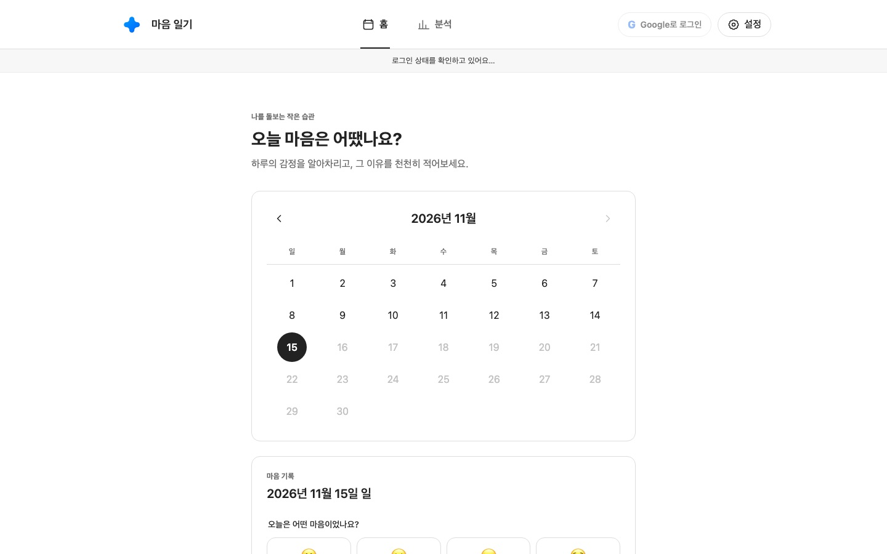
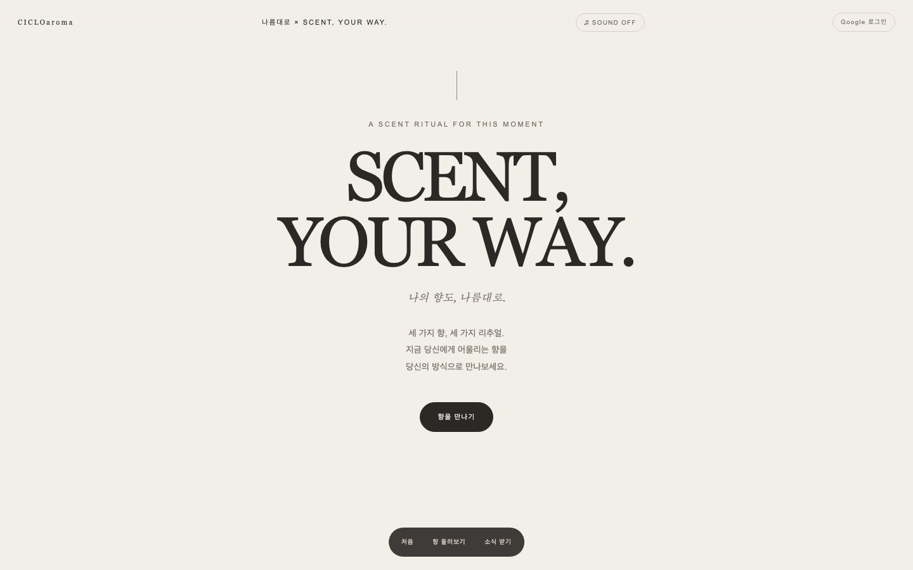
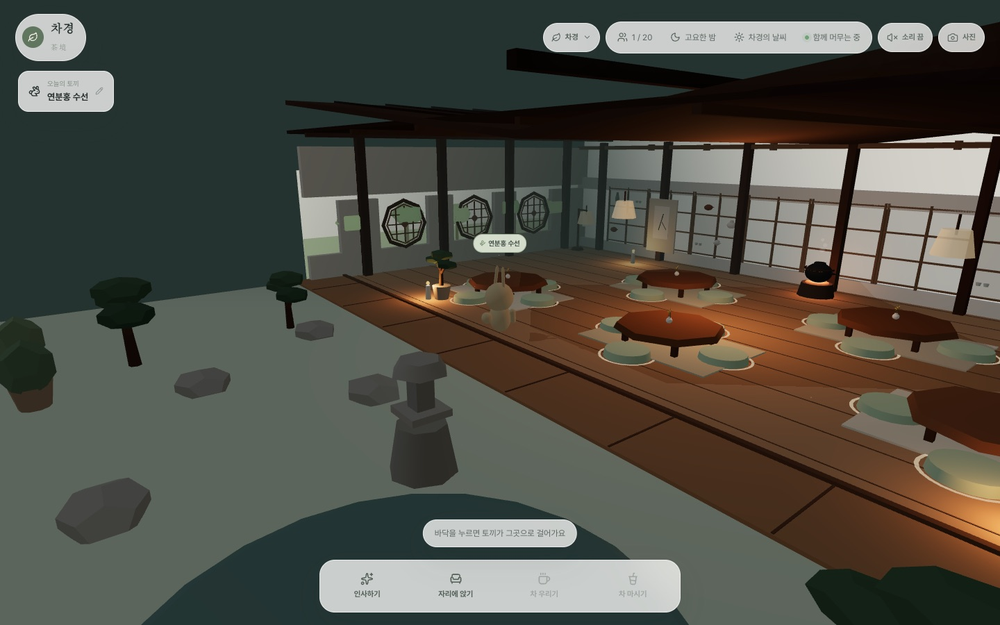

암경험자 AI 역량강화 교육
AI를 배운 뒤, 바로 일과 일상에서 쓰는 결과물
국립암센터 2026 AI 교육 참여자들이 AI와 함께 직접 만든 서비스입니다. 화면을 누르면 실제 서비스가 열립니다.

수업 공통 실습
마음 일기
1회차에 모두 함께 만드는 예시입니다. 그날의 감정을 기록하고, 언제 어떤 감정을 느꼈는지 한눈에 볼 수 있는 분석을 제공합니다.
서비스 열기 →
창업자 실사용
향 브랜드 웹사이트
암경험자 창업자가 자사 브랜드 홈페이지를 직접 개발해 운영하고 있습니다. 제품 소개, 구매, 회원 관리 기능을 제공합니다.
서비스 열기 →
참여자 작품
AI 메타버스 차모임 공간
참여자가 AI와 함께 만든 3D 공간입니다. 함께 모여 차를 우리고 마시며 소통하는 온라인 찻집입니다.
서비스 열기 → 3D 화면이라 최신 브라우저에서 열어 주세요.이 밖에도
유튜브 영상 자동 제작, 가사 재정관리 프로그램, 음식점 주방 관리 등 업무 자동화부터 웹서비스까지 다양한 결과물이 나왔습니다. 개인이 쓰는 서비스라 공개하지 않습니다.